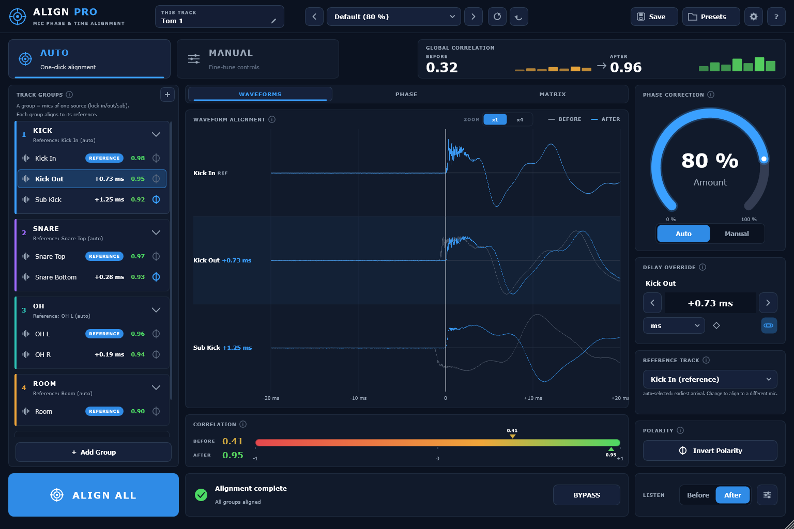
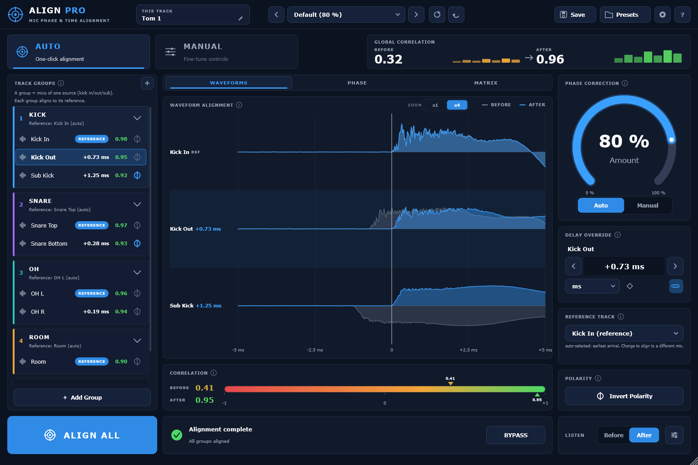
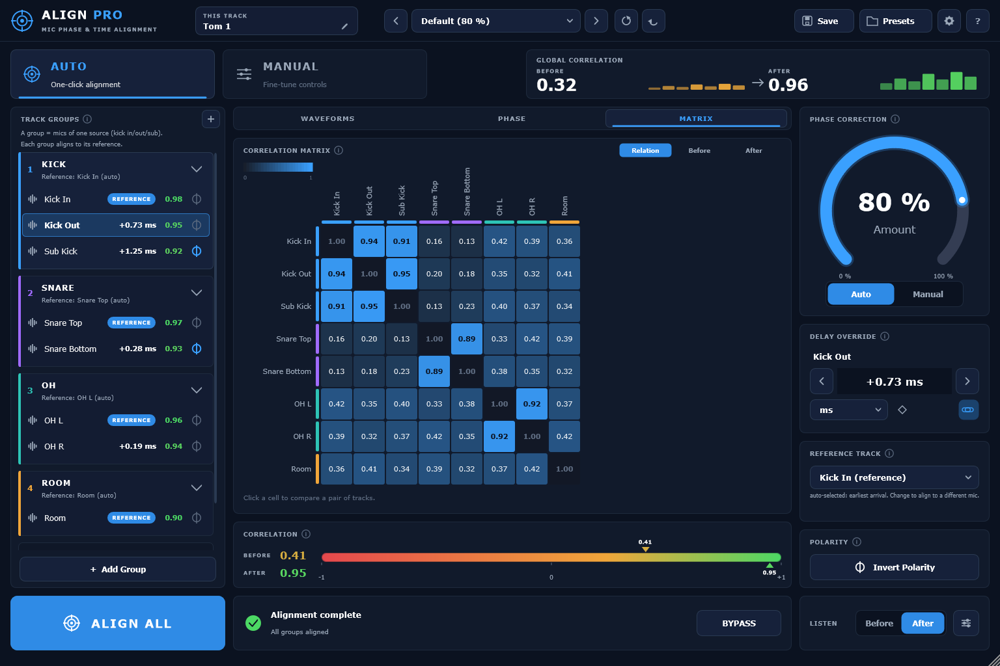

VST3 · AU · ARA2 · Standalone · Windows and macOS
Align Pro
Align every mic, and hear exactly how much.
Align Pro finds the delay, the polarity flip and the frequency dependent phase drift between every mic on a source. Then it gives you a dial for how far to take the correction, so the kit stays big.
$39 once · version 1.0.0 · one key, two computers · signed and notarized

One Millisecond Is All It Takes
At 48 kHz, one millisecond is 48 samples. A one millisecond offset between two mics cancels the frequencies around 500 Hz and its odd harmonics. That is why a kick sounds hollow, a miked guitar cab blended with a DI loses its body, and a choir array feels thin the moment everything is summed. It happens long before anyone reaches for an EQ.
Align Pro fixes the timing and the phase between every mic at once. And because a little disagreement between mics is part of what makes a room sound like a room, it lets you choose how much to fix.

Where It Matters
Drums, Cabs and Choir Arrays
Any source picked up by more than one mic: the kick in and out, snare top and bottom, overheads and room, a guitar cab with its DI, or a choir recorded with a spaced pair and spot mics.
Insert, Play Ten Seconds, Align
Insert Align Pro on every mic of the source. Play about ten seconds so the analysis can find each arrival, then press Align All. Every group aligns to its own reference and the correlation figures update. With ARA2 there is nothing to play at all, because your DAW hands over the audio and the analysis happens without a capture pass.

Every Mic Against Every Other Mic
Align Pro does not just compare each track with its own reference. It scores the whole array at once in a correlation matrix, which is where you find the pair that is fighting, like the overhead and the room that never agreed, or the snare bottom pulling against the kick.

A Dial for How Far to Take It
Alignment at full strength can flatten a kit. The Amount dial scales how much of the correction is applied, live, from none of it to all of it. You hear the correlation climb and stop at the point where the problem is fixed but it still sounds like a drum kit.
Compared With Auto-Align 2
Sound Radix Auto-Align 2 is the established tool in this category and the fair comparison. The core alignment is the same. These are the places they differ.
| Align Pro | Auto-Align 2 | |
|---|---|---|
| Correction strength | 0 to 100 percent Amount dial, live | Fixed |
| Full session view | Correlation matrix across all tracks | Reference to track only |
| Activation | Type a key, no dongle app | iLok account and License Manager |
| Presets | Unlimited, named | Four fixed slots |
| Lookahead window | Adjustable, 5 to 100 ms | Fixed |
| Core alignment | Sub-sample delay, polarity, spectral phase, automatic grouping | The same |
| Pro Tools (AAX) | Not offered | AAX and ARA2 |
Tech Specs
ARA2
Tested live in a real session. No capture pass and no added latency.
VST3
Tested live in REAPER, Cubase and Nuendo, Studio One, Ableton Live and other VST3 hosts.
Windows
Verified with the full DSP test suite and a host stress test.
macOS
Signed, notarized and stapled, so it installs without a Gatekeeper warning.
AU
Builds and loads. Not yet run inside an actual Logic session, so that is not claimed.
AAX
Not offered in version 1.
Alignment
Sub-sample delay, polarity and spectral phase, with automatic grouping and an Amount dial.
Licence
A key you type into the plug-in. Two computers, with a Deactivate button when you move.
Questions
What does the Amount dial actually do?
Do I have to play the session through first?
Does it work in Pro Tools?
What about Logic?
Is there a dongle?
Align Pro
$39
One key, two computers and no dongle. A year of updates is included, and the version you have keeps working after that.